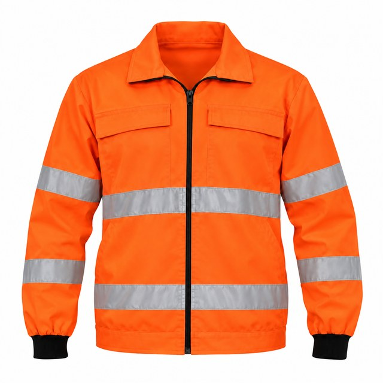
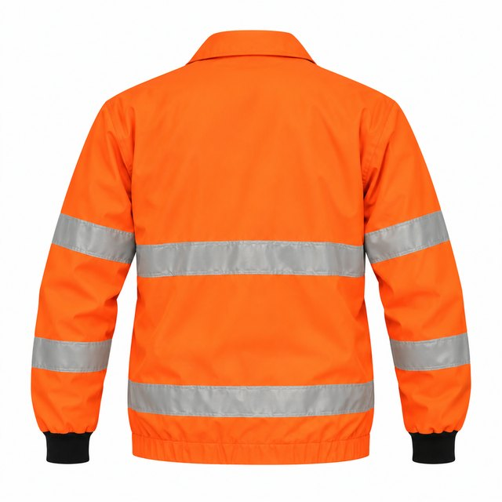
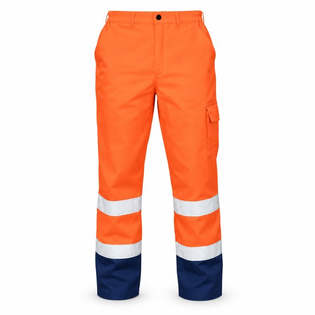
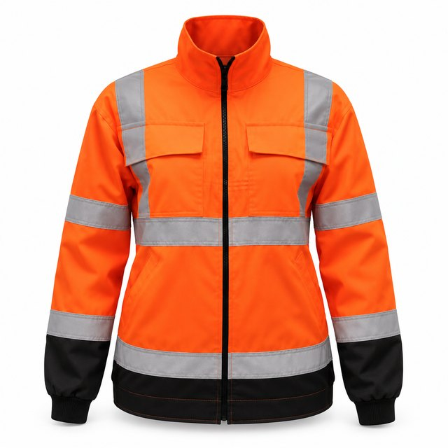
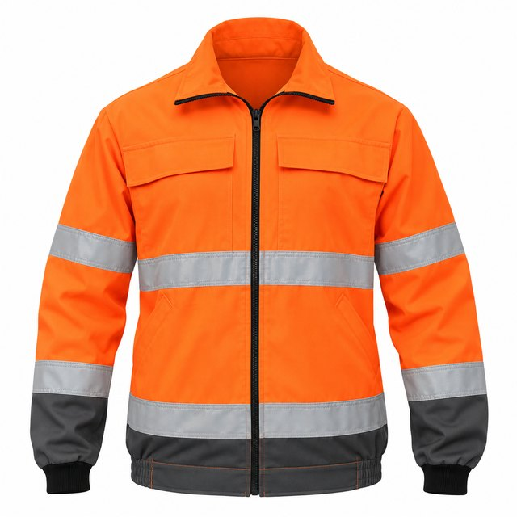
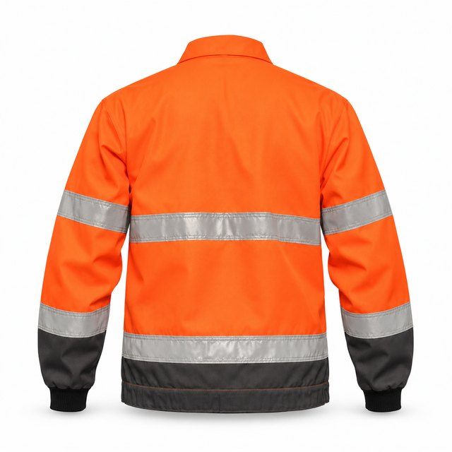
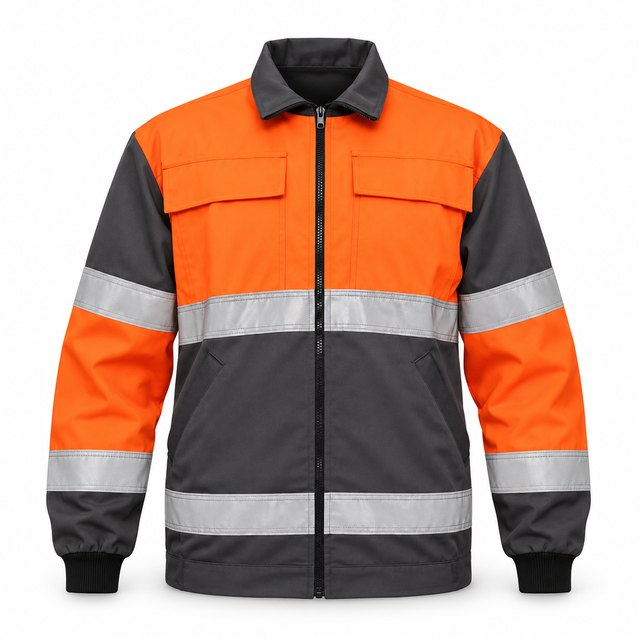
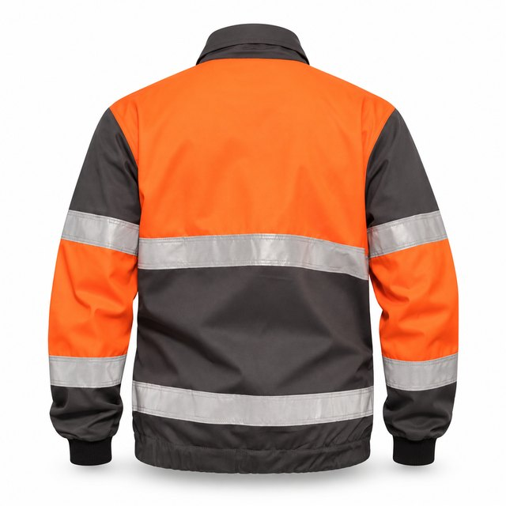

Reflexní blůza
Reflexní65 % PES / 35 % BA · 260 g/m²
1 barva · vel. 46–66
46
48
50
52
54
56
58
60
62
64
66
Celkem 0 ksbez DPH
Katalog / Kalhoty / Reflexní kalhoty do pasu s modrým spodkem

65 % PES / 35 % BA · 260 g/m² · vel. 46–66 · střih 259/R
Kalhoty do pasu s poutky na opasek a nakládanými stehenními kapsami. Rozkrok řešený klínem kvůli dřepu, zadní sed zvýšený. Kolenní díl připravený na vsazení chráničů.
Zapište počty kusů po velikostech.
65 % PES / 35 % BA, 260 g/m². Srážlivost do 3 %. Praní 60 °C.
EN ISO 13688
Skladové barvy do 5 dnů. Zakázková barva od 30 ks, 4–6 týdnů.
Chcete jinou barvu nebo úpravu střihu? Nasamplujeme vzorek. V archivu máme 1 300 střihů, většinou stačí vybrat a upravit.


65 % PES / 35 % BA · 260 g/m²
1 barva · vel. 46–66

1 pohled65 % PES / 35 % BA · 260 g/m²
1 barva · vel. 46–66


65 % PES / 35 % BA · 260 g/m²
1 barva · vel. 46–66


65 % PES / 35 % BA · 260 g/m²
1 barva · vel. 46–66